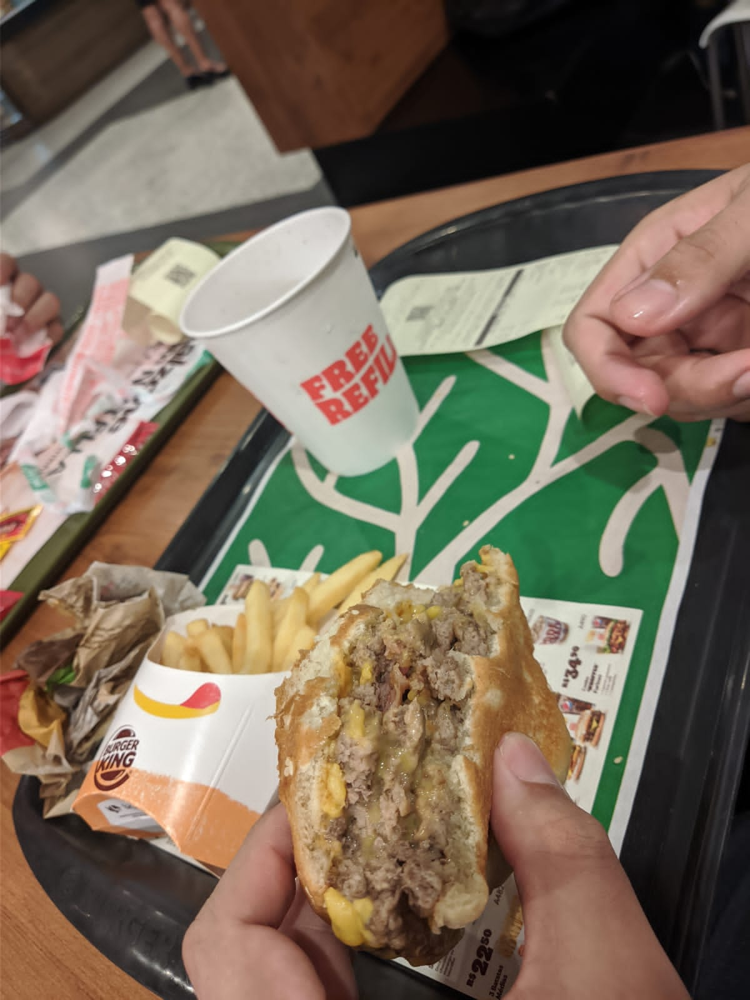
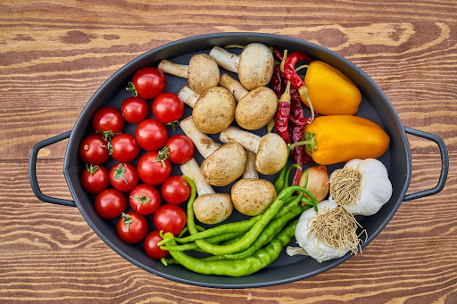
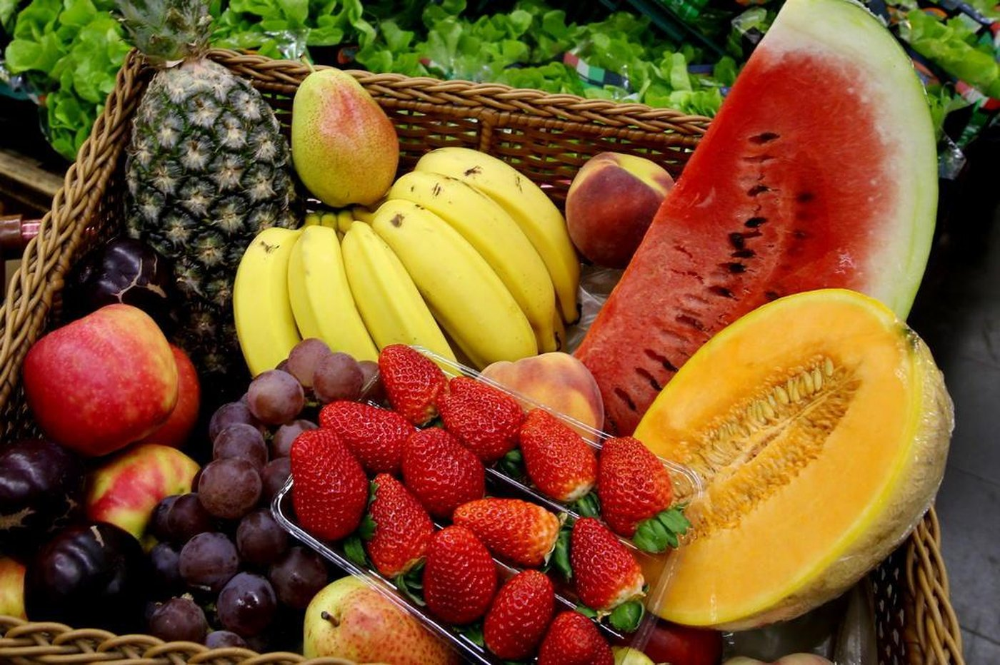
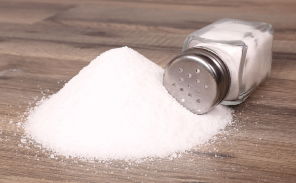
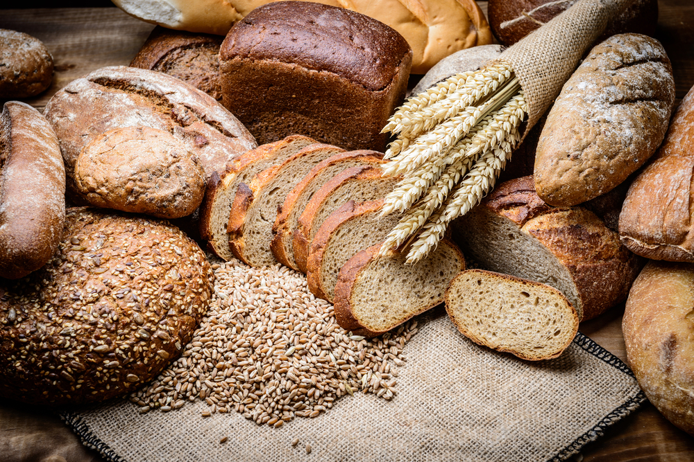
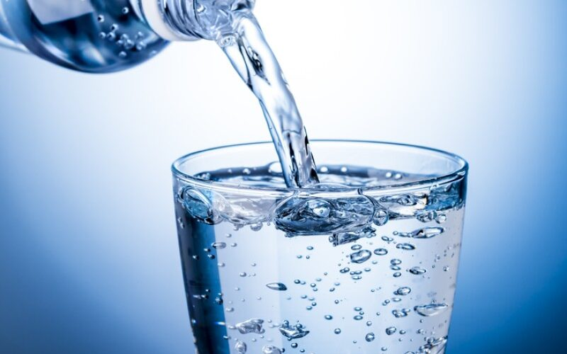
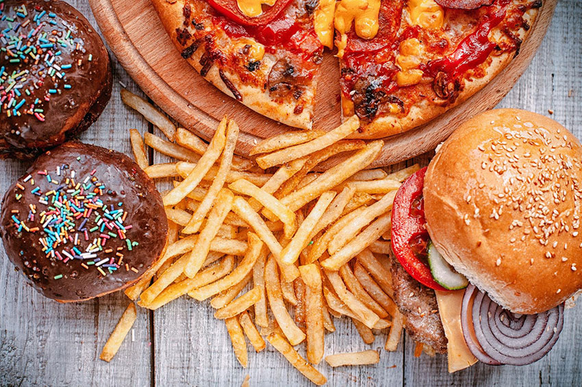
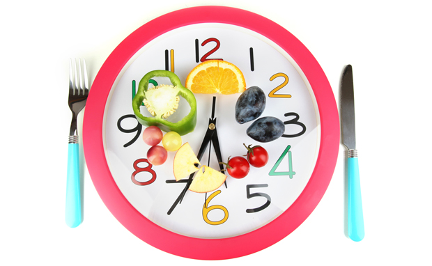
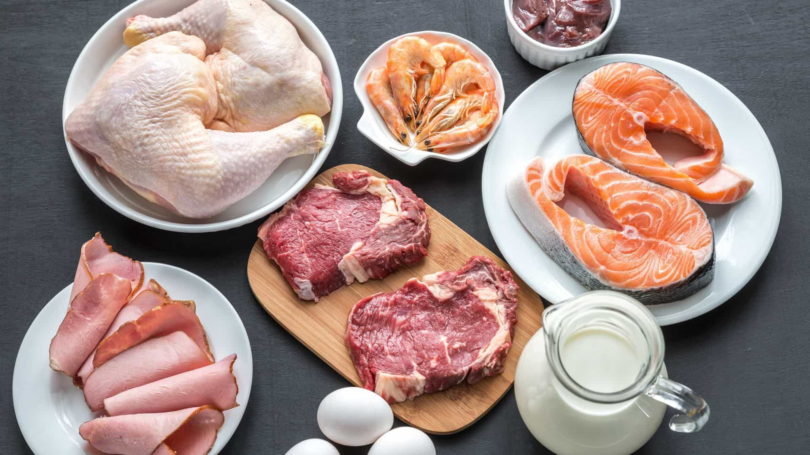

Alimentação saudável
Índice
O que é alimentação saudável?
A alimentação saudável é feita para ser o mais natural possível. Alimentos in natura e minimamente processados são exemplos de alimentos que são (em sua maioria) de origem vegetal.
Alimentos in natura são obtidos diretamente de plantas ou animais, e são comprados sem ter nenhum tipo de alteração industrial na sua composição. Exemplos: ovos, legumes, frutas, verduras, etc.
Os alimentos minimamente processados são produtos que passam por processos leves de industrialização. Exemplo: limpeza, secagem, fermentação, entre outros processos.
Nesses alimentos são adicionados alguns componentes como sal, açúcares, óleos, gorduras ou outras substâncias.
O que é uma má alimentação?
Ao contrário da alimentação saudável, a má alimentação é baseada em alimentos processados e ultraprocessados.
A cultura do fast-food é altamente prejudicial para a saúde, pois são alimentos muito processados.
Os alimentos são considerados ruins para a alimentação, pois a ultraprocessação dos alimentos pode alterar os componentes dos alimentos de forma negativa. Alguns exemplos de má alimentação são: conservas de legumes, compotas de frutas, frutas em calda ou cristalizadas, peixes enlatados, extrato de tomate, carnes adicionadas de sal, entre outros.
O consumo não é proibido, mas deve ser feito com cuidado.

Quais as consequências da má alimentação?
A alimentação é vital para as nossas vidas, mas se feita da maneira errada pode acabar sendo a causadora de doenças.
A gastrite, o colesterol alto, obesidade, osteoporose e a diabetes são apenas uma parte de todas as doenças que podem ocorrer. Por isso, tome cuidado com o que você come e sempre saiba a procedência do alimento.

Bônus: Exemplo de comida ultraprocessada
Créditos: Epic Meal Time: Fast Food Lasagna
Comer saudável: 9 dicas para melhorar os hábitos alimentares
Uma alimentação saudável pode começar com práticas simples. Neste artigo, você descobre dicas que fazem toda a diferença para sua saúde.
Comer bem pode parecer um desafio, sobretudo para quem não curte ou não sabe cozinhar. Mas mudar os hábitos alimentares pode ser mais fácil do que pensamos! Existem muitas comidas saudáveis, e com algumas alterações simples, a alimentação saudável pode virar realidade.
Fique de olho nestas dicas e deixe sua dieta mais equilibrada, uma refeição de cada vez.
Dicas para comer saudável
Incluir legumes e verduras na dieta
Ricos em vitaminas, proteínas, minerais e muita coisa que faz bem, esses grupos alimentares são fundamentais no almoço e no jantar. Turbinar as refeições com esses alimentos também é uma ótima opção para quem quer uma comida saudável para emagrecer, pois eles costumam ser pouco calóricos e muito nutritivos.

Comer três frutas por dia
Saudáveis e saborosas, as frutas são alimentos saudáveis que podem ser consumidos como lanche da tarde, sobremesa e muito mais. Como algumas são ricas em açúcares, duas ou três unidades por dia são suficientes.

Reduzir o consumo de sal
Esse mineral está presente em boa parte do que comemos, então monitorar seu consumo é um bom jeito de cuidar da saúde. A pipoca ou a batata-frita não precisam estar cheias de sal para serem gostosas, além de ser possível temperá-las com outros ingredientes. Temperar com alho, manjericão e pimenta também pode ser uma ótima ideia.

Incluir alimentos integrais na dieta
As versões integrais dos alimentos geralmente possuem mais nutrientes, como fibras e vitaminas. Substituir o arroz branco por arroz integral, por exemplo, aumenta o valor nutricional do seu prato de uma maneira simples.

Beber água
A água faz maravilhas para todo o organismo, então não são só os rins que saem ganhando quando você bebe a quantidade recomendada por dia – que varia entre 2 e 3 litros para a população adulta, dependendo do peso. Esse líquido também pode evitar a fome – e a vontade de comer – entre refeições, ajudando a emagrecer.

Diminuir o consumo de alimentos ricos em açúcar ou gordura
Esses compostos podem fazer parte de uma alimentação saudável quando consumidos com moderação. Outra vantagem de reduzir o consumo de doces é acabar apreciando mais o sabor deles, já que eles não aparecem sempre.

Diversificar sua alimentação
Para preparar refeições saudáveis, uma ótima dica é usar diversos grupos alimentares que vão garantir uma alimentação equilibrada. Legumes, verduras, frutas, carnes, cereais: todos possuem suas vantagens e benefícios para o corpo.
Comer de três em três horas
Se queremos “comer saudável”, não podemos esquecer do “comer”, o que significa também não passar muito tempo em jejum, pois o corpo precisa receber energia regularmente para funcionar bem. Existem diversas opções de lanches saudáveis entre as refeições, como frutas, sanduíches de pão integral, salada de frutas e muito mais.

Incluir proteínas em todas as refeições
Além do almoço e jantar, também é bom que outras refeições diárias contenham alguma fonte natural de proteínas. Uma boa forma é incluir ovos no café da manhã, frango desfiado no sanduíche da tarde e um iogurte na ceia. Viu como é simples consumir proteínas ao longo do dia?

Essas dicas mostram que existem muitas, pequenas e simples oportunidades de se alimentar bem, com comidas saudáveis. Agora é só aproveitar.